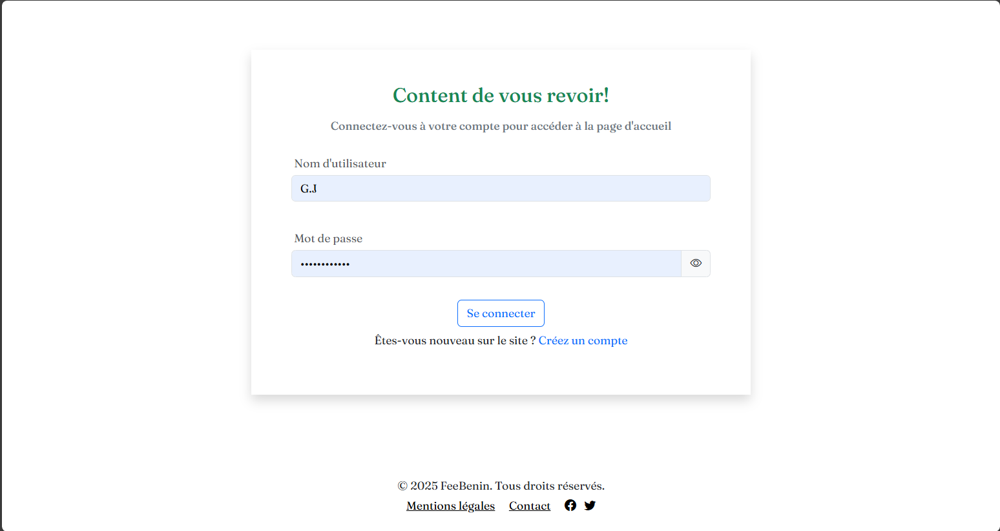

Documentation FreeBenin
FreeBenin est un site de freelance local qui met en relation les freelances béninois avec des clients à la recherche de compétences spécifiques. Le site permets aux freelances de créer un profil professionnel, de proposer leurs services et de recevoir des offres de missions, tandis que les clients pourront publier des projets et entrer en contact avec des prestataires qualifiés.
la 1er page que vous rencontre sur FreeBenin vous permet:
- La creation d'un compte(Ordinaire ou Entreprise)
- La connexion(qui vous permet de vous connecter si vous avez deja un compte)
- Un bouton de decouverte
- Une documentation
Voici une photo illustrative :

Page de creation d'un compte
Nous avons ici 2 possibilite : .un compte ordinaire .un comptre Entreprise
Créer un compte ordinaire
par compte ordinaire on entends par la compte clientsVoici une photo illustrative :

Ici on vous demande d'entre votre :
- Nom,
- Prenom(s),
- Nom d'utilisateur : si vous entrez un nom d'utilisateur deja existant il sera refuse(ceci a ete penser pour etre unique),
- Numéro de téléphone,
- Email (si le format de l'email n'est pas correcte alors vous ne pourez ps soumettre le formulaire),
- Mot de passe (lE MOT DE PASSE EST DEMANDER 2 fois)
Créer un compte entreprise
Nous avons penser aux entreprise et pour plus de securite et de creduliter nous demandons assez d'informationVoici une photo illustrative :

🚀 Commencer avec FreeBenin
Lorsque vous creez un compte et confirmer votre email vous etes rediriger vers la page de connexion:
💼 Pour les Freelances
- 🎯 Créez votre vitrine professionnelle
- 📌 Ciblez les offres de mission en fonction de vos compétences
- 📨 Communiquez avec les clients via la messagerie interne
- 💰 Recevez vos paiements rapidement et en toute sécurité
🏢 Pour les Clients
- 📢 Publiez une mission avec vos besoins
- 🔍 Explorez les profils disponibles et sélectionnez votre prestataire
- 🤝 Gérez vos projets et suivez leur avancement depuis votre tableau de bord
🔐 Sécurité & Fiabilité
FreeBenin s’engage à garantir une expérience fiable :
- 📧 Notifications par email pour chaque action importante
- 🔐 Système de paiement sécurisé (Mobile Money, carte bancaire, etc.)
- 🛡️ Modération active contre les abus et contenus inappropriés
💬 Assistance & FAQ
Consultez notre FAQ pour des réponses rapides, ou contactez l’équipe support.